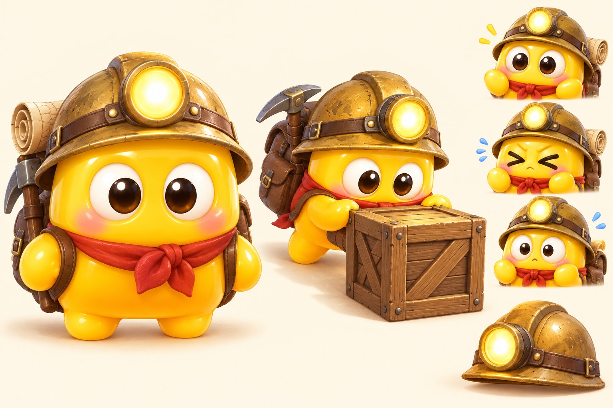
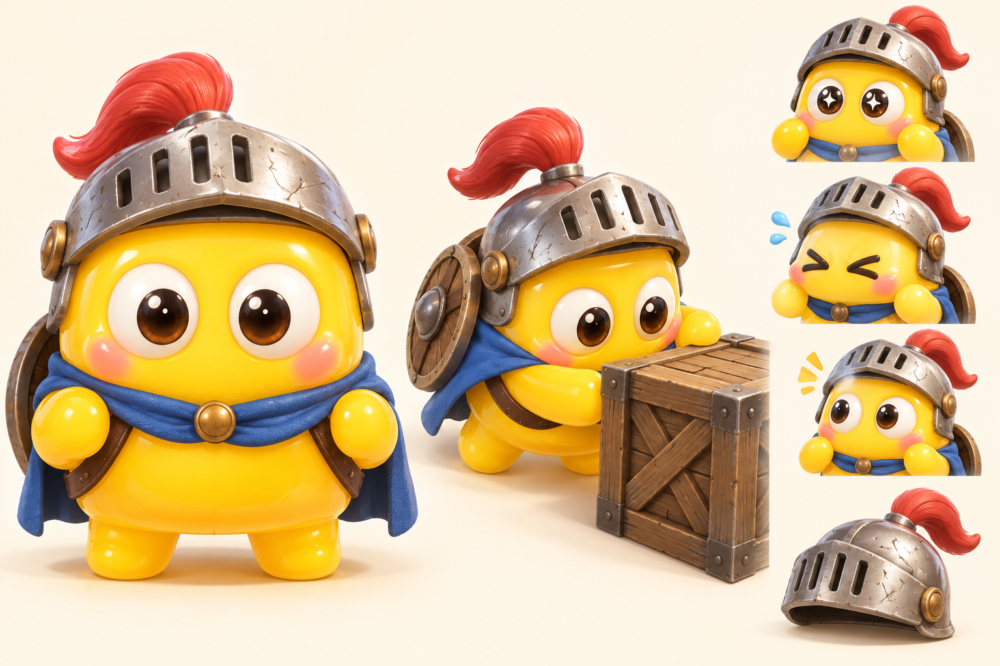
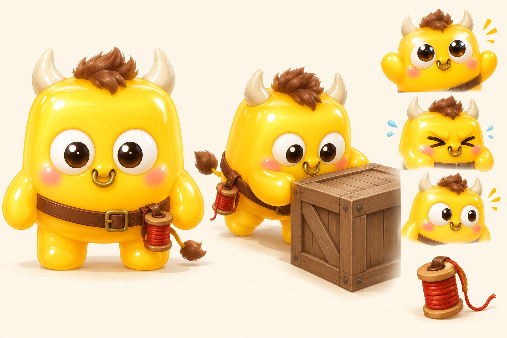
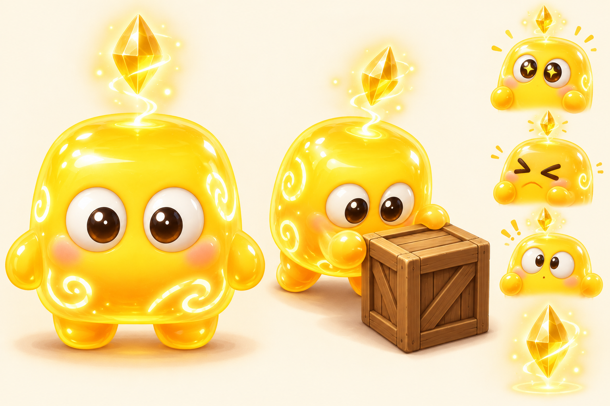

주인공 캐릭터 시안 4종
지금의 젤리 몸과 얼굴은 유지하고, 상징 아이템과 성격으로 개성을 준 방향입니다. 각 장은 정면, 상자를 미는 자세, 표정 세 가지, 상징 아이템 순서입니다.
A. 꼬마 탐험가
용감하지만 잘 놀라는 보물 사냥꾼

- 상징
- 눈까지 내려오는 큰 광부 헬멧과 헤드램프, 몸보다 큰 배낭, 붉은 스카프
- 던전과의 연결
- 미궁을 탐험해 유물을 모으는 게임의 목적과 그대로 맞습니다
- 참고
- Captain Toad의 헤드램프와 큰 배낭
B. 견습 기사
블록을 밀며 수련하는 성실한 종자

- 상징
- 찌그러진 투구와 붉은 깃, 파란 망토, 등에 멘 둥근 방패
- 던전과의 연결
- 던전을 하나씩 돌파하는 수련 여정으로 풀 수 있습니다
- 참고
- 판타지 던전물의 초보 기사
C. 아기 미노타우로스
미궁에서 태어난 순한 아이. 몸집에 비해 힘이 셉니다

- 상징
- 작은 뿔과 앞머리, 금 코뚜레, 꼬리, 허리에 찬 붉은 실타래
- 던전과의 연결
- 미궁의 원래 주인이라는 설정이고, 실타래는 미궁 신화의 길잡이 실입니다
- 참고
- 미노타우로스와 아리아드네의 실
D. 미궁의 정령
미궁의 마법에서 태어난 호기심 많은 수호 정령

- 상징
- 머리 위에 떠 있는 금빛 결정, 몸의 소용돌이 문양, 안에서 비치는 빛
- 던전과의 연결
- 마법진과 빛나는 출구 같은 마법 요소와 어울립니다
- 참고
- BoxBoy의 큐비처럼 장비 없이 몸 자체로 구분되는 방식